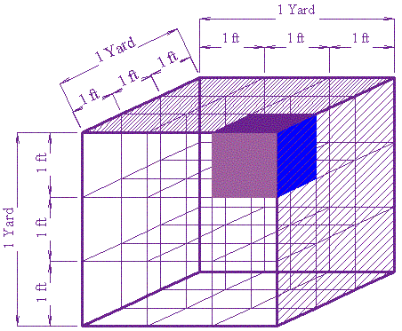

Conversion of Volume
Note: we also have Conversion Charts, and a Unit Converter.
First, you should understand Conversion of Length. If you are comfortable converting miles to kilometers, etc, then you are half way there.
Volume is Length by Width by Height

To convert Volume, remember that volume is length by width by height:
Volume = Length × Width × Height
So, we need to convert once for the length and once again for the width and once more for the height. It is that easy:
Just do the length conversion three times.
Here are some examples:
Example: Convert 1 cubic yard into cubic feet.
Now, we know that three feet make a yard:
1 yd = 3 ft
So, the Length conversion is "multiply by 3".
And so the Volume conversion must be to multiply by 3 and multiply
by 3 again and then multiply by 3 once again (ie once each for length, width and height)
The result is:
3 × 3 × 3 = 27
There are 27 cubic feet in a cubic yard.
Try to count the 1 ft cubes below, and you will see why:

Example: Convert 30 cubic feet into cubic meters (30 ft3 to m3)
The conversion for feet to meters is:
1 ft = 0.3048 m
So, the Length conversion is to multiply by 0.3048
And the Volume conversion must be to multiply by 0.3048, and multiply
by 0.3048 and multiply by 0.3048 again:
30 × 0.3048 × 0.3048 × 0.3048 = 0.85
So, 30 ft3 = 0.85 m3